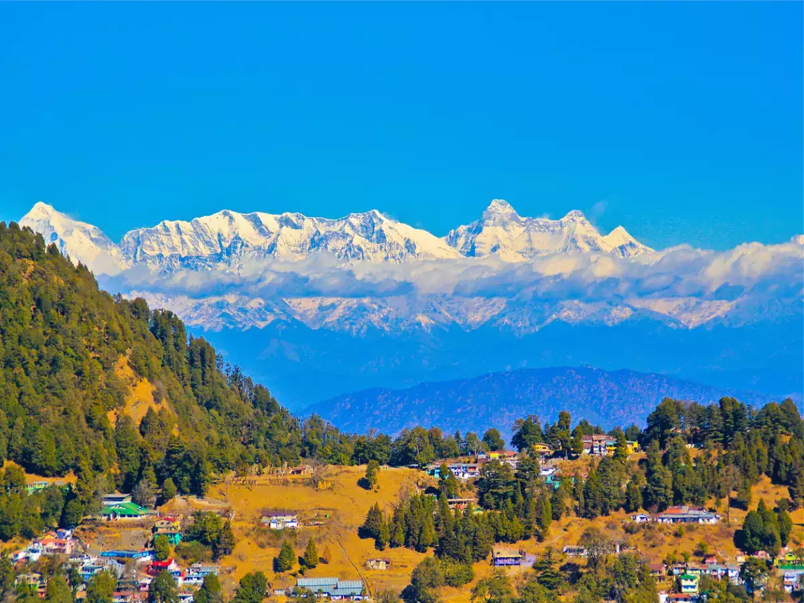

Uttarakhand
"The Land of Gods"
Quick Facts
Popular Tourist Attractions
Kedarnath
One of the Char Dham shrines located in the Himalayas.
Nainital
Picturesque hill station known for its beautiful lake and views.
Haridwar
Sacred city known for Ganga Aarti and spiritual traditions.
Nature & Wildlife
Home to Jim Corbett National Park, Valley of Flowers, and dense pine forests. Rich in flora and fauna including tigers, leopards, and Himalayan wildlife.
Famous Personalities
- Gaura Devi: Environmentalist associated with the Chipko Movement.
- Bachendri Pal: First Indian woman to climb Mt. Everest.
- Narendra Singh Negi: Renowned folk singer and lyricist.
Local Handicrafts
Woolen products, Aipan art, ringaal bamboo crafts, and wooden carvings reflect the mountain traditions of the region.
Climate
Uttarakhand has a varied climate—from snow-covered peaks to warm valleys. Summers are pleasant, winters are cold, and monsoons bring lush greenery.
Culture & Festivals
Dance
Langvir Nritya and Barada Nati are popular traditional dances.
Festivals
Harela, Ghee Sankranti, and Nanda Devi Raj Jat Yatra are significant cultural festivals.
Food
Mandua roti, gahat dal, and bal mithai are traditional delicacies.
Attire
Traditional Pahari dresses, woolen shawls, and ornaments are common.
Did You Know? The Valley of Flowers in Uttarakhand is a UNESCO World Heritage site known for its rare Himalayan flora.
Note: Information may be subject to updates. Kindly notify us of any discrepancies.